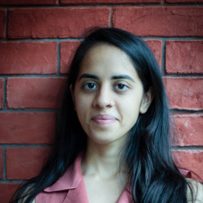
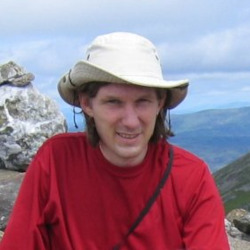
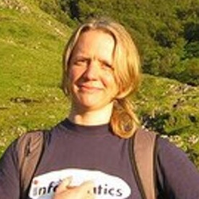
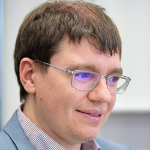

Introduction
Large language models are undeniably reshaping language technology. Yet as models are claimed to "support X languages", the research community still lacks clear answers to core questions, such as What does multilinguality really mean, and how should we evaluate it? Counting languages in training data or translating benchmarks likely isn't enough. Multilingual evaluation today suffers from duplicated efforts, inconsistent practices, limited comparability across works, and general poor understanding of theoretical and practical problems.
Workshop on Multilingual and Multicultural Evaluation (MME) aims to bring the community together with three goals:
- Create a dedicated venue for multilingual evaluation resources and methodology.
- Advance and standardize evaluation practices to improve accuracy, scalability, and fairness.
- Integrate cultural and social perspectives into multilingual evaluation.
Call for Papers
We invite submissions on topics, including, but not limited to:
- Evaluation resources beyond English or Western-centric perspectives and materials
- Annotation methodology and procedures
- Evaluation protocols: ranking vs direct assessment, rubric-based vs reference-based vs reference-free, prompt variations, etc
- Complex and practical tasks: multimodality, fairness, long I/O, tool using, code-switching, literary, etc
- Sociocultural and cognitive variation affecting the use and evaluation across languages
- Scalable evaluation of cultural and factual knowledge
- Efficient evaluation of a massive number of languages and tasks
- Metrics, LLM judges, and reward models
- Standardization in reporting and comparison of multilingual performance
- AI-assisted evaluation: data, methods, metrics, and standards
- Other position, application, or theory contributions
We welcome both archival and non-archival papers, resulting in presentations at the workshop. In addition, archival papers will be published in ACL Anthology. An archival submission cannot be under review or accepted at another archival venue. ARR-reviewed papers can be directly committed.
All archival submissions must follow the ACL style guidelines and be anonymized for double-blind review. Short papers may have up to 4 pages and long papers up to 8 pages, excluding references and appendices. Upon acceptance, one additional page will be allowed for the camera-ready version. Non-archival submissions have no formatting or anonymity requirements.
Please submit your work by December 19 2025 through this link. ARR (meta-)reviewed papers can be committed by January 5 2026 using this link.
Key Dates
All deadlines are 11:59PM UTC-12:00 ("Anywhere on Earth").
- Direct submission deadline: December 19 2025, direct submission link
- ARR-reviewed paper submission deadline: January 5 2026, commitment link
- Notification of acceptance: January 23 2026
- Camera-ready deadline: February 3 2026
- Workshop time: 14:00-17:30 March 28 2026
Speakers
 Freda
Shi
Freda
ShiAccepted Papers
- LLMs as Span Annotators: A Comparative Study of LLMs and Humans;
- On the Credibility of Evaluating LLMs using Survey Questions;
- An improved Code-Switching Detection System for some Indic Languages;
- Vinclat: Evaluating Reasoning, Cognition and Culture in One Game;
- Conceptual Cultural Index: A Metric for Cultural Specificity via Relative Generality;
- The Anthropology of Food: How NLP can Help us Unravel the Food cultures of the World;
- LLM-as-a-qualitative-judge: automating error analysis in natural language generation;
- Cross-Lingual Stability of LLM Judges Under Controlled Generation: Evidence from Finno-Ugric Languages;
- Cross-lingual and cross-country approaches to argument component detection: a comparative study.;
- UNSC-Bench: Evaluating LLM Diplomatic Role-Playing Through UN Security Council Vote Prediction;
- Leveraging Wikidata for Geographically Informed Sociocultural Bias Dataset Creation: Application to Latin America;
- Whom to Trust? Analyzing the Divergence Between User Satisfaction and LLM-as-a-Judge in E-Commerce RAG Systems;
- Query-Following vs Context-Anchoring: How LLMs Handle Cross-Turn Language Switching;
- Generating Difficult-to-Translate Texts;
- A Woman is More Culturally Knowledgeable than A Man?': The Effect of Personas on Cultural Norm Interpretation in LLMs;
Further, we welcome the non-archival presentation of the following works:
- Ranking Entropy, Coverage Gap, and Support Set Index: Simple Signals for Multilingual Data Quality;
- MAKIEval: A Multilingual Automatic WiKidata-based Framework for Cultural Awareness Evaluation for LLMs;
- CLM-Bench: Benchmarking and Analyzing Cross-lingual Misalignment of LLMs in Knowledge Editing;
- Pearmut: Human Evaluation of Translation Made Trivial;
- Do LLMs Truly Benefit from Longer Context in Automatic Post-Editing?;
- Evaluating the Evaluator: Human–LLM Alignment in Multilingual Cultural Reasoning;
- Multi-Agent Multimodal Models for Multicultural Text to Image Generation;
- MentorQA: Multi-Agent Multilingual Question Answering for Long-Form Mentorship Content;
- Cross-Cultural Meme Transcreation with Vision-Language Models;
- Robust Code-Switched Speech Recognition with Whisper: A Comparative Study of Full Fine-Tuning and LoRA on SEAME;
- WORLDVIEW: A Multilingual Benchmark Revealing U.S. Cultural Dominance, Stereotyping and Diversity Failures in Text-to-Image Models;
- Beyond Character Matching: Proposing Psycholinguistically Informed Metrics for Chinese Radical Knowledge in LLMs;
- Glints of Gold or Troubling Waters? Can a School of Merged Monolingual Goldfish Models Swim in Bilingual Seas?;
- Recovered in Translation: Efficient Pipeline for Automated Translation of Benchmarks and Datasets;
- VietMix: A Naturally-Occurring Parallel Corpus and Augmentation Framework for Vietnamese-English Code-Mixed Machine Translation;
- Benchmarking Temporal Reasoning and Alignment Across Chinese Dynasties;
- SwissGov-RSD: A Human-annotated, Cross-lingual, Document-level Benchmark for Recognition of Semantic Difference at the Token-level;
- When Flores Bloomz Wrong: Cross-Direction Contamination in Machine Translation Evaluation;
- How Important is ‘Perfect’ English for Machine Translation Prompts?;
- RoD-TAL: A Benchmark for Answering Questions in Romanian Driving License Exams;
- Do Diacritics Matter? Evaluating the Impact of Arabic Diacritics on Tokenization and LLM Benchmarks;
- Form and Meaning in Intrinsic Multilingual Evaluations;
- FiNERweb: Datasets and Artifacts for Scalable Multilingual Named Entity Recognition;
- Measuring Linguistic Competence of LLMs on Indigenous Languages of the Americas;
- BabyBabelLM: A Multilingual Benchmark of Developmentally Plausible Training Data;
- MAPS: A Multilingual Benchmark for Agent Performance and Security;
- LLMs and Cultural Values: The Impact of Prompt Language and Explicit Cultural Framing;
- Cetvel: A Unified Benchmark for Evaluating Language Understanding, Generation and Cultural Capacity of LLMs for Turkish;
Organizers
 Pinzhen
Chen
Pinzhen
ChenQueen's University Belfast Vilém Zouhar
ETH Zurich Hanxu Hu
University of Zurich Simran Khanuja
CMU Wenhao Zhu
ByteDance Barry Haddow
University of Edinburgh Alexandra Birch
University of Edinburgh Alham Fikri Aji
MBZUAI Rico Sennrich
University of Zurich Sara Hooker
Adaptable Intelligence
Please reach out to mme-workshop@googlegroups.com with any questions or inquiries. This workshop follows ACL's Anti-Harassment Policy.
Program Committee
- A B M Ashikur Rahman (King Fahad University of Petroleum and Minerals)
- Ahrii Kim (Soongsil University)
- Aishwarya Jadhav (University of California, Berkeley)
- Ashok Urlana (International Institute of Information Technology, Hyderabad)
- Bhavitvya Malik (University of Edinburgh)
- Dayyán O'Brien (University of Edinburgh)
- Esther Ploeger (Aalborg University)
- Houda Bouamor (Carnegie Mellon University, Qatar)
- Jacqueline Rowe (University of Edinburgh)
- Junxiao Liu (Nanjing University)
- Koel Dutta Chowdhury (Saarland University)
- Laurie Burchell (Common Crawl Foundation)
- Lorenzo Proietti (Sapienza University of Rome)
- Mateusz Klimaszewski (Warsaw University of Technology)
- Nikita Kiran Yeole (Virginia Tech)
- Nikita Moghe (Amazon)
- Niyati Bafna (Johns Hopkins University)
- Ona de Gibert (University of Helsinki)
- Peter Devine (University of Edinburgh)
- Pinzhen Chen (Queen's University Belfast)
- Shehenaz Hossain (Munster Technological University)
- Shenbin Qian (University of Oslo)
- Sherrie Shen (University of Edinburgh)
- Songbo Hu (University of Cambridge)
- Stefano Perrella (Sapienza University of Rome)
- Vilém Zouhar (ETH Zurich)
- Xu Huang (Nanjing University)
- Yogen Vilas Chaudhari (PowerSchool)
- Zheng Zhao (University of Edinburgh)
- Zhijun Wang (Nanjing University)